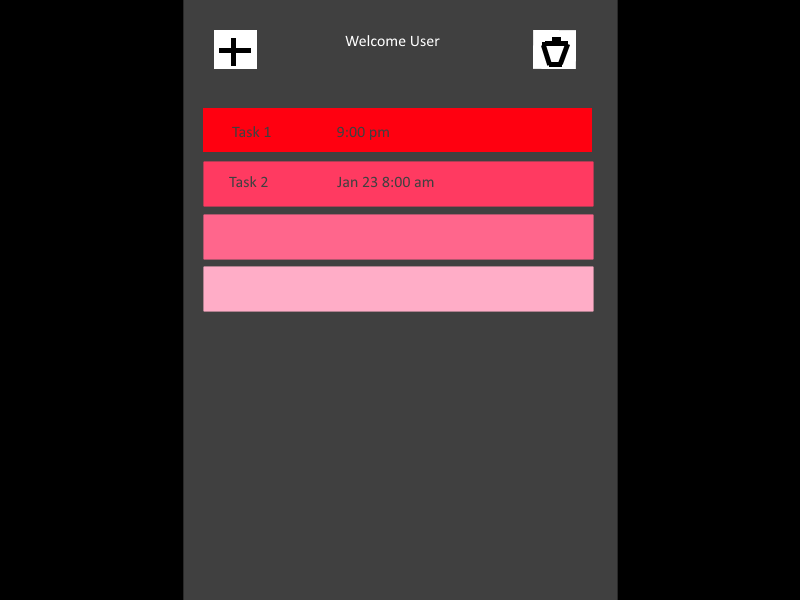
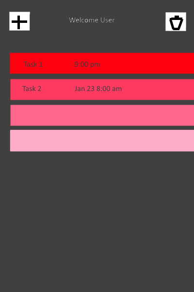

Task Organizr
Abstract
This website will be a website in which the user can record assignments from their mobile or desktop browser, rank them with levels of priority, and record when they need to be done. When the user logs in, they will be presented with the highest priority first, and each priority level will be sorted by the closest due date.
Concept
A task managing application with a elegant and responsive user interface.
Multi-User?
This application will support multiple users by allowing as many people as possible to log into the client and view or edit data. Even though many users are allowed, they can't interact with each other, only with the server.
Client
The client will be browser based, with a responsive design to work on mobile browsers as well. Due to this constraint, the design will be relatively simple, just showing different tasks organized by whatever pattern is decided on, and buttons to add or remove assignments.
Server
The server will be used primarily to store users and tasks in a database, and link each user to his/her tasks. The server will also handle adding and removing tasks when a user chooses to. I am thinking of using either a SQL database with PHP or Node.js.
User Interface
Desktop
Mobile
Thoughts
I have used and seen a lot of task organizing apps and calender applications that have way too much to do on it, where as a simple task interface that you can access easily on the go seems to be much more helpful.